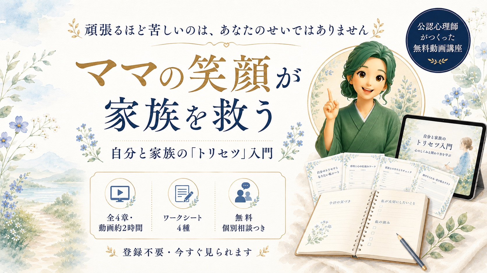

頑張るほど苦しい理由
子育ても、夫婦も、自信のなさも、実は根っこでつながっています。「愛情不足でもやり方の間違いでもない」というところから始めます。
📄 第1章のワークシート
「頑張りすぎサインチェック」がついています。

ひとつでも当てはまったら、この講座はあなたのためのものです。
努力が足りないのではなく、
がんばり方が合っていないだけ。
人にはそれぞれ、生まれ持った資質があります。
木にも水をやりすぎれば根が腐るように、合わないがんばり方を続けると、力のある人ほど疲れてしまうんです。
この4章では、その「あなたに合うがんばり方」の入口を見ていきます。
たくさん覚えなくて大丈夫です。この2つが残れば充分です。
生年月日から出る「日干」で、あなたのがんばり方のクセと、疲れ方のサインが見えてきます。
クセは直すものではなく、扱うもの。あなたの資質に合った、小さな一歩をひとつ持ち帰ります。
登録もパスワードも要りません。ご自分のペースで、少しずつどうぞ。
ワークシートは書き込みながら見ると、残り方がまるで変わります。
子育ても、夫婦も、自信のなさも、実は根っこでつながっています。「愛情不足でもやり方の間違いでもない」というところから始めます。
10種類の「日干」から、あなたの才能の原型を見ていきます。大樹、草花、太陽、灯火、山、大地、鋼、宝石、海、雨 — あなたはどれでしょう。
資質からいったん離れて、誰にでも当てはまる話を。あるママの朝の場面から、「なぜ同じことが繰り返されるのか」をほどいていきます。
いちばん近いからこそ、分かり合えて当然だと思ってしまう。最終章では、これからどんな関係を築いていきたいかを、あなたの言葉にします。
命式は8文字。この講座で見たのは、そのうちの1文字です。
残りの7文字と、心のクセを重ねると、あなた専用のトリセツになります。
「自分の場合はどうなんだろう」と思ったら、そこから先は一緒に見ていきましょう。
動画を見て終わりにしないための、いちばん確実な一歩です。
お子さんの声が入っても、途中で抜けても大丈夫です。
さっちゃん
公認心理師／3児の母
心理学と四柱推命を組み合わせて、これまで350回以上の個別セッションをしてきました。
と言いつつ、私自身が「ちゃんとしたお母さん」からはずいぶん遠くて。子どもに強く言ってしまって、夜に一人で落ち込む夜を、何度も過ごしてきました。
変わったのは、自分を直そうとするのをやめて、自分の資質に合ったやり方に変えてからです。がんばる量ではなく、がんばり方のほうを変えたら、家の中の空気が先に変わりました。
この講座は、そのときに私が知りたかったことを、そのまま4章にしたものです。無理しすぎず、いきましょう。
新しい講座やコンテンツのご案内、日々のちいさな気づきをお届けしています。ワークに書いたものを送っていただければ、私から一言お返事します。
公式LINEを友だち追加する
ママが自分に戻ると、家族の空気も変わっていきます。
その順番は、逆ではないんです。
今日の一歩を、ひとつだけ決めていきませんか。